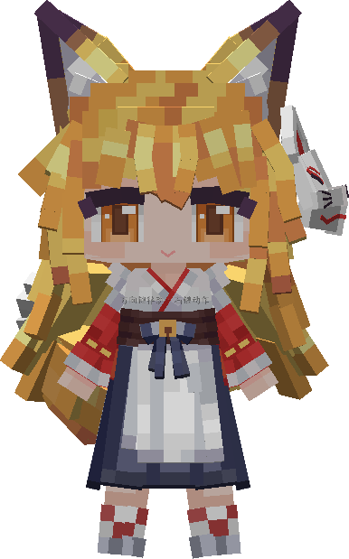

它有自己的路线
没人理它的时候，它会在桌面底下慢慢散步。走到哪儿算哪儿，偶尔停下来，看看你在做什么。
一个会自己散步、会回应右键、会抬眼看你的桌面旅伴。它不占一整块屏幕，只在你桌面的角落，安静地陪着。
Windows 10 / 11（64 位），单机可用，不需要在线账号。

它会走、会看、会回应。你忙你的，它有自己的节奏。
没人理它的时候，它会在桌面底下慢慢散步。走到哪儿算哪儿，偶尔停下来，看看你在做什么。
空闲的时候，它的视线会跟着鼠标移动。不是盯着你，只是知道你在那儿。
按住左键就能把它拖到任何地方。松手后，它会自己落回地面；开着飞行时，就停在半空。
动作、舞蹈、表情、设置，都在那扇小窗里。选一个，它会用自己的方式回应你。
每一套模型都带着自己的动作。右键翻开，挑一个，它会用自己的方式回应你。
这只是它会的其中几样。
每套模型都有自己的动作和表情，等你去翻。
假设你刚拿到一台新电脑。按顺序做完这四步，桌面上就会多一个它。
WindowX 与 Yes Steve Model 请从各自作者的发布页获取对应 1.21.1 版本；安装脚本会在缺少时提醒。Yes Steve Model 的官网是 ysm.cfpa.team。
在 64 位的 Windows 10 / 11 上，安装 Java 21。用 PCL2（或你常用的启动器）安装 Minecraft 1.21.1 和对应的 NeoForge 版本，先启动一次，确认能进入游戏。
然后把 WindowX 2.1.10 和 Yes Steve Model 2.6.5 放进这个游戏实例的 mods 文件夹。它们和桌宠住在同一个房间。
如果你已经有一个能正常运行 YSM 的 1.21.1 实例，可以直接跳到第二步。
下载 v1.0.0 安装包，解压到任意一个你记得住的文件夹。解压后会看到 install.ps1、YSMDesktopPet.exe 和桌宠的 mod 文件。
v1.1.0 为补充版：新增一键安装 Minecraft/依赖、环境自检和黑屏修复向导；v1.0.0 继续作为兜底保留。
在解压出来的文件夹里，右键 install.ps1，选择“使用 PowerShell 运行”。如果系统询问，允许它运行。
按提示选择你的游戏实例文件夹——也就是能看到 1.21.1-NeoForge_21.1.265.json 的那一层。脚本会自己把桌宠放进 mods。
powershell -ExecutionPolicy Bypass -File .\install.ps1
也可以直接在文件夹空白处打开 PowerShell，粘贴上面这行命令。
运行安装好的 YSMDesktopPet.exe（安装脚本会把它放到用户目录）。在托盘图标上右键，选择“启动游戏”。进入 YSM_Desktop_Pet 世界后，它就会出现在桌面上。
第一次见面，右键它 → 模型，选择你喜欢的 .ysm 模型；没有额外模型时，会先用默认的。
想开机自启：托盘图标 → 设置 → 勾选“开机自动运行本启动器”。
装之前、装之后，可能会想知道的几件事。
不需要。启动器使用离线用户名，单机世界可以直接进入。你平时用 PCL 启动也没有问题，只要游戏实例里有上面提到的两个模型组件。
它会进入一个专用的空世界，关闭游戏音乐，并降低渲染距离和帧率上限。桌面上只显示角色窗口，不显示整个游戏画面。
可以。进入桌面菜单后点“模型”，选择你的 .ysm 模型即可；选择会保存下来，下次还是它。
会。切换虚拟桌面后，它仍然待在你放下的位置。目前只在主显示器工作区内活动。
托盘图标 → “恢复游戏窗口”，或按 Ctrl + Alt + O。想彻底卸载，删除 mods 里的桌宠文件，并删除 %LOCALAPPDATA%\YSMDesktopPet 文件夹即可。
一个下载，一次安装。之后它就在那里，安静地陪你。
Windows 10 / 11（64 位），解压即用。作者 Qxii2026。